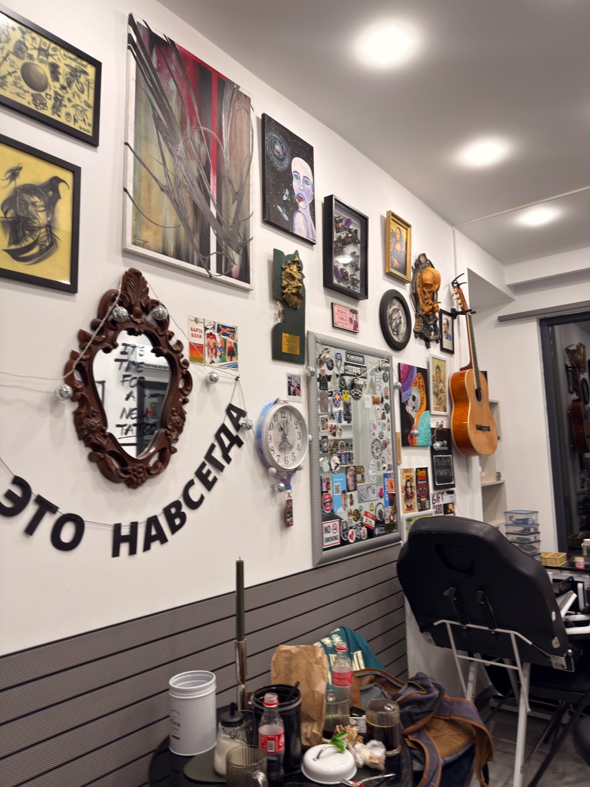
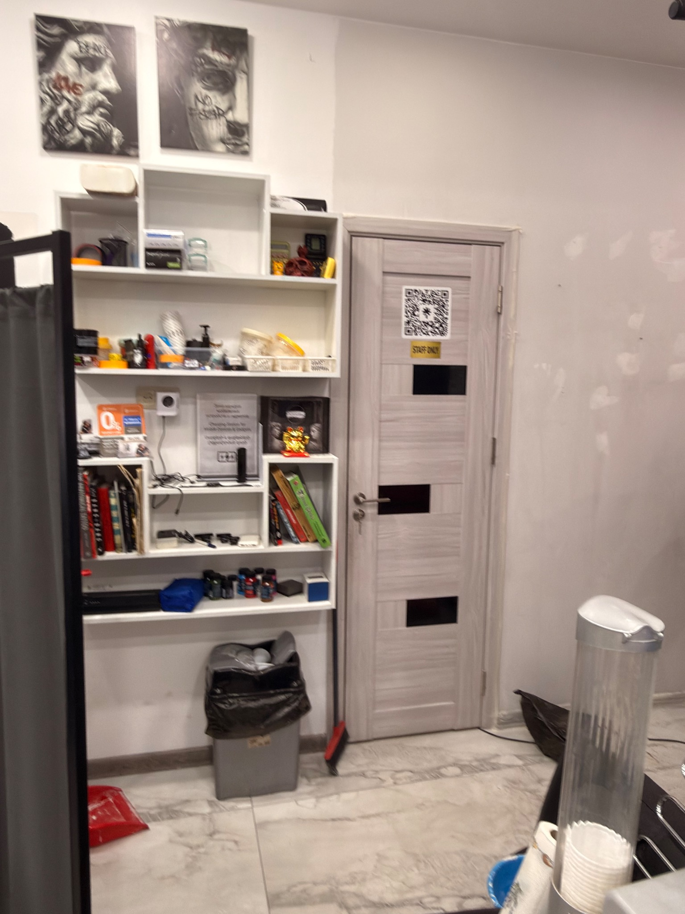

2019
Home Studio
Arthur began tattooing from a home studio. This is where the idea of opening a professional space first took shape.
01
City center. Quality tattoo. A working independent studio in Yerevan built around artists, clients and real work.



Studio 14 grew out of a project that started years before this space opened. The timeline follows Arthur from a home setup to a professional studio in central Yerevan.
Arthur began tattooing from a home studio. This is where the idea of opening a professional space first took shape.
As the client base grew, Arthur rented a room in a local barbershop and developed his practice there for about two years.
The first professional studio created room for several artists to work at once. It also welcomed local and international artists into the Yerevan tattoo scene.
After three years of Underground, Studio 14 was created as a more professional and international project, built on Arthur’s tattooing experience and years of running a shared studio. Tattoo, education and piercing now live under one roof.
Studio 14 is at Yervand Kochar 22/1 in central Yerevan. Use the interactive map to see the exact location and nearby streets.